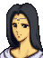

第4章Dancing in the Sky
Scenes (59)
- ワールドマップ
- オープニング（シレジア）
- オープニング（セイレーン）
- 1ターン目のトーヴェ軍フェーズ
- 1ターン目のトーヴェ軍フェーズ終了後（ザクソン）
- 会話（エーディン→アゼル）
- 会話（エーディン→ミデェール）
- 会話（エーディン→ジャムカ）
- 会話（シグルド→クロード）
- 会話（ティルテュ→アゼル）
- シルヴィアとフュリーが隣接したとき
- 村訪問（セイレーン城東）
- 村訪問（セイレーン城北東）
- 村訪問（マップ上側の左から1番目）
- 村訪問（マップ上側の左から2番目）
- 村訪問（マップ上側の左から3番目）
- 村訪問（マップ上側の左から4番目）
- 村訪問（マップ中央）
- 村訪問（トーヴェ城西）
- クブリ初戦時
- クブリ撃破時
- ディートバ初戦時
- ディートバ撃破時
- トーヴェ城に近づいたとき
- デューが跳ね橋のあった場所の1マス左に待機したとき
- マイオス初戦時
- マイオス撃破時
- トーヴェ城制圧時
- トーヴェ城制圧直後のザクソン軍フェーズ（ザクソン）
- トーヴェ城制圧直後のシレジア軍フェーズ（シレジア）
- マーニャ登場直後のザクソン軍フェーズ
- パメラ初戦時
- パメラ撃破時
- マーニャ初戦時
- マーニャ撃破時
- アンドレイ初戦時
- マーニャとパメラが接近したとき
- マーニャ死亡直後のシグルド軍フェーズ（シレジア）
- ザクソン軍によるシレジア城制圧直後のザクソン軍フェーズ
- アンドレイ撤退直後のザクソン軍フェーズ（ザクソン）
- アンドレイ撤退直後のザクソン軍フェーズ（シレジア）
- アンドレイ撤退直後のザクソン軍フェーズ（ザクソン）
- シレジア城に接近したとき
- 会話（シルヴィア→クロード）
- シビリアン（男）を助けたとき
- シビリアン（女）を助けたとき
- ドノバン初戦時
- ドノバン撃破時
- シレジア城制圧時
- シレジア城制圧直後のザクソン軍フェーズ
- シレジア城制圧直後のザクソン軍フェーズ終了後
- 会話（レヴィン→シグルド）
- 会話（フュリー→レヴィン）
- レヴィンがシレジア城に入ったとき
- レイミア初戦時
- レイミア撃破時
- ダッカー初戦時
- ダッカー撃破時
- ザクソン城制圧時
ワールドマップ
思いもよらぬ出来事で、愛する祖国から
反逆者の汚名をきせられたシグルドは、Through an unforeseen turn of events, Sigurd, branded a traitor by the very homeland he loved,
失意の中、
北辺の独立国シレジアへと落ちのびた。fled in despair to the independent northern nation of Silesse.
風の聖戦士セティによって建国された
シレジア王国は、The kingdom of Silesse, founded by the Wind Crusader Sety,
勇猛なる天馬騎士団と風の魔道士たちに
守られ、建国以来 百年間、had been protected by its valiant Pegasus Knights and wind mages, and for the hundred years since its founding,
他国に侵略される事もなく、
完全な中立を保ってきた。had never been invaded by another nation, maintaining complete neutrality.
しかし、数年前に国王が亡くなると
跡目をめぐって王族内で対立がおこり、But when the king died a few years ago, conflict arose within the royal family over the succession,
平和だったこの国にも
にわかに戦乱のきざしがみえてきた。and even this once-peaceful nation now showed sudden signs of war.
先王には王妃ラーナとの間に
レヴィンという王子がいたが、The late king had a son, Prince Levin, by Queen Lahna,
野心あふれる王弟ダッカー公は、
レヴィンの王位継承を不服としてbut the ambitious younger brother, Duke Dakar, objecting to Levin's succession to the throne,
ザクソン城にたてこもり、
また、これに呼応するかのようにentrenched himself in Saxony Castle, and as if in answer to that,
末弟のマイオス公爵も
トーヴェの城に兵を集めだした。the youngest brother, Duke Maios, also began gathering troops at Tove Castle.
このような状況の中で、レヴィン王子は
やむなく国を出たのだったが、In the midst of this situation, Prince Levin had no choice but to leave the country,
王族達の野望は留まるところをしらず、
シレジアの美しい大地は、but the royal family's ambitions knew no bounds, and Silesse's beautiful land
今まさに、戦乱の炎によって
焼き尽くされようとしていた。was now on the verge of being consumed by the flames of war.
オープニング（シレジア）
(ラーナ、マーニャがシレジア城からセイレーン城に向かう)
オープニング（セイレーン）

シグルド様、ラーナ様が
おいでくださいましたLord Sigurd, Lady Lahna has come to see you.

ラーナ様が？Lady Lahna has?

シグルド様、
セイレーン城の暮らしはいかがですか
もう、おなれになったかしらLord Sigurd, how is life at Seiren Castle? Have you grown used to it yet?
はい、ありがとうございます
ラーナ様のご厚意には
本当に感謝しておりますYes, thank you. I'm truly grateful for Lady Lahna's kindness.
こんな小さな城では
なにかとご不自由でしょうが
もう少しだけ辛抱して下さいねIn such a small castle, you must be inconvenienced in various ways, but please bear with it a little longer.
あなたが無実であることを
手紙にしたためて
何度も送っているのですがI've written letters many times, stating that you are innocent, and sent them off,
アズムール王からは
いまだに返事がないのですbut there's still no reply from King Azmur.
それは・・・たぶん宰相のレプトールが
握りつぶしているのでしょう
わが父を陥れたのも、おそらくは・・・That's... probably because Chancellor Reptor is intercepting them. The one who framed my father was likely him too...
シグルド様
・・・おきもちはわかりますが
あせってはなりませんLord Sigurd... I understand how you feel, but you mustn't be impatient.
それに、人をうらんではだめです
憎しみからは何も生まれないわ
私がきっとなんとかしますAnd you mustn't resent people either. Nothing good comes from hatred. I'll surely find a way.
もう少しだけお待ちになってPlease wait just a little longer.
ありがとうございます
本当にラーナ様には
なんとお礼を申し上げればよいか・・・Thank you. I really don't know how to thank you enough, Lady Lahna...
そんな事は気になさらないで
あ、それとね、シグルド様Please don't worry about that. Oh, and that reminds me, Lord Sigurd,
グランベルでは
めでたい事があったそうですよI hear there was happy news in Grannvale.
めでたい事？Happy news?
ええ、なくなられたクルト王子に
姫様がいらしたそうなの
その方が発見されて国中が大さわぎですYes, it seems the late Prince Kurth had a daughter. The whole country's abuzz over her discovery.
え！？ ・・・それは本当ですか！What!? Is that really true!?
アズムール国王がお会いされて、
一目見るなりわかったとのことKing Azmur met her himself, and apparently knew at a single glance.
むろんナーガのしるしもあり、
バーハラ王家の直系であることは
まちがいないそうですOf course, there's also the mark of Naga—there's no mistaking she's a direct descendant of the royal house of Belhalla.
そうか・・・それはよかった
これで王家の血が絶えることは
ないのですねI see... that's wonderful. So the royal bloodline won't die out after all.
それにね、その姫様は
アルヴィス卿と恋仲だそうよAnd you know, apparently the princess is in love with Lord Arvis.
国王も認められて
近々盛大な挙式をなされるとかThe king has approved, and they're said to be holding a grand wedding ceremony soon.
アルヴィス卿と？With Lord Arvis?
見てきた者の話では
とても美しい姫様のようで
アルヴィス卿とはとてもおにあいとか、From what those who've seen her say, she's a very beautiful princess, and she and Lord Arvis make a wonderful couple,
お二人とも幸せそうだったと
申しておりましたand I hear both of them looked very happy.
ふふっ、若い人達はいいですね
シグルド様も・・・あっ・・・ごめんなさい
・・・・・あなたのおくさまは・・・Heh heh, young people these days. Lord Sigurd, you too... oh... I'm sorry... your own wife...
妻は・・・ディアドラは消えたままです・・・My wife... Deirdre is still missing...
あれからもう一年あまり、
セリスもすっかり大きくなったというのに
まだ見つけることができませんIt's been over a year now, and Celice has grown up so much, but I still haven't been able to find her.
シグルド様、気を落とさないで、
きっと見つかります、だから・・・Lord Sigurd, please don't lose heart. I'm sure she'll be found, so...
はい、私も信じています
ディアドラとはきっと再会できる
そんな気がしてならないのですYes, I believe that too. I have this feeling that I'll surely be reunited with Deirdre someday.

ラーナ様、もうすぐ夜になります
そろそろ、お帰りにならないとLady Lahna, it'll be nightfall soon. We should be heading back.
あ、そうね、もうこんな時間
シグルド様、最後に一言だけOh, that's right, it's already this late. Lord Sigurd, just one last word.
トーヴェ城のマイオス公爵には
気をつけて下さい
彼は前からこの城をほしがっていたのPlease be careful of Duke Maios at Tove Castle. He's wanted this castle for a long time.
だから、いつ攻めてくるかも知れないわ
もし戦いになれば、
私たちも援護すべきなのだけど・・・So he might attack at any moment. If it comes to a battle, we really should support you, but...
シレジアは、ザクソンのダッカー公に
ねらわれています
守りをゆるめてはなりませんSilesse is being targeted by Duke Dakar of Saxony. You mustn't let your defenses down.
我らのために兵を出すなど、
それこそダッカー公のおもうつぼですSending troops to help us is exactly what Duke Dakar would want.
私たちのことはどうか心配なさらずに
トーヴェ軍など、私の手勢だけで
けちらしてみせますPlease don't worry about us. I'll crush the Tove army with just my own men, you'll see.
そうですね
あなたたちは歴戦の勇者でしたねI see. You and your men are seasoned warriors, aren't you.
ああ、すっかり話し込んでしまいました
それではシグルド様、どうかお元気でAh, I've been talking far too long. Well then, Lord Sigurd, please take care.
ラーナ様こそ、どうかお気をつけてLady Lahna, it's you who should take care.
1ターン目のトーヴェ軍フェーズ
よし、準備はととのった
計画通り、セイレーンを攻略せよGood, preparations are complete. As planned, attack Seiren Castle.
われら風使いの恐ろしさを、
反逆者どもに見せてやれ！Show those traitors the terror of us wind-users!
1ターン目のトーヴェ軍フェーズ終了後（ザクソン）
なに？ トーヴェのマイオスが
ついに兵を動かしただと！What? Maios of Tove has finally moved his troops!
ふふふ・・・
これは面白くなってきた
そうであろう、パメラよFufufu... this is getting interesting. Isn't it so, Pamela?
はっ、シグルド公子の軍は
逃亡兵の集まりとはいえ、
あなどれぬ力をもっておりますIndeed. Lord Sigurd's army may be a gathering of deserters, but they possess formidable strength.
マイオス公が引きつけてくだされば
われらのシレジア攻略もたやすいかとIf Duke Maios can draw them in, our conquest of Silesse should be easy.
うむ、グランベルとも
すでに密約ができておるMm, we already have a secret pact with Grannvale as well.
アンドレイ公子の援軍も
近々到着するであろうPrince Andrei's reinforcements should arrive before long too.
ふふふ・・・パメラよ
わしがシレジア王となる日も
そう遠くはあるまいのFufufu... Pamela, the day I become King of Silesse isn't far off now.
おおせのとおり・・・As you say...
会話（エーディン→アゼル）
※エーディンとアゼルが恋人関係の場合のみ[Only if Edain and Azel are a couple]

アゼル、気を付けてねAzel, take care of yourself.

うん、エーディンもねYeah, you too, Edain.
でも、なんだか不思議・・・
あなたとこんな事になるなんて
思ってもみなかったBut, somehow it's strange... I never imagined things would turn out like this with you.
ボクが年下だから？Is it because I'm younger than you?
ううん、そうじゃないけど・・・No, that's not it, but...
ボクだって信じられないEven I can't believe it myself.
エーディンが
ボクの妻になってくれたなんて、
なんだかゆめを見ているみたいだThat Edain became my wife—it feels like I'm dreaming somehow.
えっ、どうして？
あなたとわたしじゃおかしい？Huh, why? Is it strange, you and me?
エーディンは
ボクにはまぶしすぎたから・・・You were too dazzling for me...
初めてきみを見たとき、
ボクはまだ子供だったけど
むねがドキドキして止まらなかったThe first time I saw you, I was still a kid, but my heart pounded and wouldn't stop.
その日からずっと、
きみの事だけを想っていた・・・From that day on, I kept thinking only of you...
ふふっ、アゼルったらHeh heh, oh, Azel.
なんだか恥ずかしいや・・・
あ、そうだ、これをあげるI feel kind of embarrassed... oh, that's right, here, take this.
これはレスキューの杖と言って
遠くにいる人を
そばに呼び戻す事ができるそうだThis is called the Rescue Staff—it can call someone far away back to your side.
きみになら使えると思うI think you'd be able to use it.
アゼル、わたしは幸せです
あなたは誰よりもやさしい人
わたしの宝だもの・・・Azel, I'm happy. You're the kindest person, anyone, to me... you're my treasure...
(「レスキューの杖 をてにいれた！」)
会話（エーディン→ミデェール）
※エーディンとミデェールが恋人関係の場合のみ[Only if Edain and Mideel are a couple]
ミデェール、この弓を持っていってMideel, take this bow with you.

これは勇者の弓ですね
私がもらってもいいのですか？Isn't this the Hero's Bow? Is it really all right for me to have it?
ええ、あなたのために買いました
シレジアの天馬騎士は恐ろしい敵Yes, I bought it for you. The Pegasus Knights of Silesse are a terrifying enemy.
この弓ならば、
きっとあなたを守ってくれますWith this bow, I'm sure it'll protect you.
エーディン様、私はまだ、
ゆめを見ているような気がしますLady Edain, I feel as if I'm still dreaming.
こうなることをずっと
ゆめみていましたからBecause I've dreamed of this happening for so long.
わたしも同じゆめをみていました
本当はさみしかったのです
ずっとあなたを待っていたのに・・・I've been dreaming the same dream too. To tell the truth I was lonely—I was waiting for you all this time...
ミデェール、かならず無事で戻って、
そしてわたしをエーディンと呼んで、
あなたのために、いのっていますMideel, come back safe no matter what, and then, call me Edain, I'm praying for you.
(「ゆうしゃのゆみ をてにいれた！」)
会話（エーディン→ジャムカ）
※エーディンとジャムカが恋人関係の場合のみ[Only if Edain and Jamka are a couple]
ジャムカ、この弓を使ってくださいJamka, please use this bow.

これは、勇者の弓だな
俺がもらっても、いいものなのか？This is the Hero's Bow, isn't it. Is it really all right for me to have it?
あなたに持っていてもらいたいのですI want you to have it with you.
シレジアの天馬騎士は恐ろしい敵
でもこの弓なら、
あなたを守ってくれるでしょうThe Pegasus Knights of Silesse are a terrifying enemy, but this bow should protect you.
ありがとう、エーディン
この弓をおまえと思って、大事にするよ
戦いが終わったら、ゆっくり会おうThank you, Edain. I'll treasure this bow, thinking of it as you. Once the fighting's over, let's meet slowly.
ジャムカ・・・・・・
あなたの無事をいのっていますJamka...... I'm praying for your safety.
(「ゆうしゃのゆみ をてにいれた！」)
会話（シグルド→クロード）
クロード様、申し訳ありません
あなたまで巻き込んでしまってFather Claude, I'm sorry, dragging even you into this.

いや、私こそ力になれなくて
すまないと思っていますNo, it is I who feel sorry for not being able to help you.
グランベルに戻って国王陛下に
真実を申し上げるつもりでしたが、I intended to return to Grannvale and tell His Majesty the truth,
レプトールたちに
先手を打たれてしまいました
今では私も反逆者の一人ですbut Reptor and his men beat me to it. Now I too am one of the traitors.
レプトールたちのやり方には
もう、がまんなりませんI can no longer bear Reptor and his men's way of doing things.
この上は力ずくでもグランベルに行き
汚名をはらすつもりでいますAt this point, I intend to go to Grannvale even by force, and clear my name.
いいえ、戦争はよくありません
苦しむのは力のない庶民です
シグルドどの、がまんするのですNo, war is not a good thing. It's the powerless commoners who suffer. Lord Sigurd, you must be patient.
しかしクロード様！But, Father Claude!
あなたのおきもちはわかりますが、
すでに運命の扉は開かれたI understand how you feel, but the door of destiny has already been opened.
もはや私たちの力では
どうすることもできないのですThere's nothing more we can do about it with our own strength now.
会話（ティルテュ→アゼル）
※ティルテュ、アゼルともに恋人がいない場合のみ[Only if neither Tiltyu nor Azel has a sweetheart]

アゼル、待ってよAzel, wait up.
ティルテュか、どうしたんだい？Tiltyu, is it. What's wrong?
少しきいてほしいことがあるのThere's something I'd like you to listen to.
えっ？ ボクにかい？Huh? To me?
うん、いいでしょ
あなたとは幼なじみだしYeah, is that all right? We've known each other since we were little, after all.
他にこんな話ができる人なんて
いないものThere's no one else I can talk about things like this with.
なんか深刻そうだな
いいよ、ボクで力になれることなら
話してみなよSounds kind of serious. All right, if it's something I can help with, tell me.
うん・・・わたしね、Yeah... you see, I,
何もかんがえないで
クロード様についてきちゃったけど、
ほんとにこれでよかったのかな・・・I came along with Father Claude without thinking about anything, but I wonder if that was really the right thing to do...
どうしてそんな事を思うんだい？Why would you think something like that?
だって、
みんなわたしに気をつかってるものBecause everyone's being considerate toward me, that's why.
わたしの前では、
お父さまのことは話さないし・・・In front of me, nobody talks about Father...
そうか・・・、それでさみしいんだな
でも、みんなきみのことが好きなんだよI see... that's why you're lonely. But, you know, everyone likes you.
ただ、どう接していいのかわからないから
困っているんだと思うIt's just that they're troubled because they don't know how to treat you, I think.
まあ、そのうちになれるさ
大丈夫だよWell, you'll get used to it eventually. Don't worry.
うん・・・そうよね・・・
ありがとうアゼル、
なんだか元気が出てきちゃったYeah... you're right... thank you, Azel, I somehow feel cheered up.
ははは、ティルテュは元気が一番さHahaha, Tiltyu's energy is second to none.
さみしいときは
いつでもボクが相手になるから
えんりょなしに言ってくれよWhenever you're lonely, I'll always be there for you, so just say so without holding back.
うん・・・ありがとYeah... thanks.
(ティルテュ、MHP+5)
(ティルテュとアゼルの恋愛値+100)
シルヴィアとフュリーが隣接したとき
※シルヴィア、フュリー、レヴィンともに恋人がいない場合のみ[Only if Silvia, Fury, and Levin all have no sweetheart]

ねぇ、ちょっとフュリー
もしかしてあなた
レヴィンのこと、好きなの？Hey, Fury, could it be... do you like Levin?
えっ！ ・・・わたしは・・・そんな・・・
ただ、レヴィン王子は
シレジアにとって大切な方だし・・・What!? ...I'm... that's not... it's just that Prince Levin is important to Silesse, so...
あっそう、
じゃあ、わたしとレヴィンが
付き合ってもいいのねOh, I see, so it's fine for me and Levin to go out, then?
え、えぇ、べつにかまわないけど・・・Wh-why, I don't particularly mind...
ホントに～？
無理してんじゃないの？Really~? You're not forcing yourself, are you?
む、無理なんかしてないわ
どうして私が
無理なんかしなくちゃいけないのI-I'm not forcing myself at all. Why would I have to force myself?
べっつに～、 それならいいんだけど
じゃあ私がもらっちゃうわよ
レヴィンさ・・・Suuure~, well, if that's the case, I'll just take him for myself, Levin, I mean...
あっ・・・でもね、
シレジア王妃になる人は
ラーナ様のような気品がなくてはね・・・Ah... but you know, someone who's to become the queen of Silesse should have Lady Lahna's kind of elegance...
あたしじゃダメだって言うの！？
失礼しちゃうわ！Are you saying I'm no good!? That's so rude!
え・・・、そんな・・・Eh... that's not...
ふんっ、いいわよ！
あたし、負けないからねっHmph, fine! I won't lose, you know!
・・・・・・・・・...............
(シルヴィアとレヴィンの恋愛値+50)
(フュリーとレヴィンの恋愛値+20)
村訪問（セイレーン城東）
魔法にも武器と同じく優劣がある
炎は風に強く、風は雷に強く、
雷は炎に強いMagic has its strengths and weaknesses too, same as weapons. Fire is strong against wind, wind against lightning, lightning against fire.
ただし光と闇は、
そのすべてに対して有利なのじゃ
よくかんがえて戦いなされBut light and dark have the advantage over all of them. Think carefully as you fight.
(「○○○○ ゴールドてにいれた！」)
村訪問（セイレーン城北東）
神の血はいろいろな力をもっておるThe blood of the gods carries all sorts of power.
レベルの高いアイテムが
使えるようになるし、
戦士としての能力アップも早くなるIt lets you use higher-level items, and your abilities as a warrior improve faster too.
むろん、限られた者にしか
その血は受け継がれておらぬがのぉOf course, only a limited few still carry on that bloodline, though.
(「○○○○ ゴールドてにいれた！」)
村訪問（マップ上側の左から1番目）
神の力を完全に受け継ぐのは
直系の子孫だけOnly direct descendants can fully inherit the power of the gods.
だから聖遺物とよばれる
神のアイテムを使えるのは
直系の子孫だけなのじゃThat's why only direct descendants can use the god-given items known as holy relics.
しかし、もし同族同士の血が交われば
血がこくなって神の力を得ることもあるBut, if blood from the same bloodline were to mix, the blood would thicken, and one could even gain the power of the gods.
だがのぉ、それはいまわしきこととして
きんじられておるのじゃ・・・But that, you see, is forbidden as a taboo thing...
(「○○○○ ゴールドてにいれた！」)
村訪問（マップ上側の左から2番目）
シレジア王家の力は風、
風神フォルセティから与えられたものThe power of the Silesse royal family is wind, bestowed by the wind god Forseti.
ヴェルトマー公爵家の力は炎、
火神ファラから与えられたものThe power of House Vertomer is fire, bestowed by the fire god Fala.
フリージ公爵家の力は雷、
雷神トールから与えられたものなのじゃThe power of House Freege is lightning, bestowed by the thunder god Thor.
(「○○○○ ゴールドてにいれた！」)
村訪問（マップ上側の左から3番目）
暗黒神ロプトウスの力は闇、
これに対抗できるのは
聖神ナーガの聖なる力だけThe power of the dark god Loptous is darkness—the only thing that can oppose it is the holy power of the holy god Naga.
そして、そのナーガの力を受け継ぐのは
グランベルのヘイム王家だけなのじゃAnd the only ones who carry on Naga's power are Grannvale's royal house of Heim.
(「○○○○ ゴールドてにいれた！」)
村訪問（マップ上側の左から4番目）
※シルヴィアで訪問した場合[If visited with Silvia]
おお！ シグルド様の軍が
助けに来て下さったぞ！
ん？ あんたダンサーかい？Oh! Lord Sigurd's army has come to help us! Hm? You're a dancer?
よかったら、
わしらの為に踊っては下さらんか、If you don't mind, won't you dance for us, please,
こんなご時世じゃ
毎日楽しい事もなくってなin times like these there's nothing fun to enjoy every day.
うん、いいよ！
わたしなんかの踊りで元気が出るなら
いくらでも踊ってあげる！Sure, I don't mind! If my dancing can cheer you all up, I'll dance as much as you like!
・・・じゃあ、いくよ！！...All right, here I go!!
(シルヴィアがBGMとともに踊り始める)
それっ！There!
はいっ！Hyah!
やっ！Yah!
(シルヴィアが踊り終える)
ふぅ～、どう？
少しは楽しんでもらえた？Phew~, how was it? Did it cheer you up a little?
おぉ！ 何てすばらしい踊りだ！
なんかこう、もう一回がんばろう！
って気がしてきたゾ！Ohh! What a wonderful dance! Somehow I feel like giving it one more try now!
ありがとう、お礼と言ってはなんだが
この魔法の剣をさしあげよう
きっとあんたを守ってくれるはずだThank you. It's not much of a thank-you, but let me give you this magic sword. I'm sure it'll protect you.
(「まもりの剣 をてにいれた！」)
※その他のユニットで訪問した場合[If visited with any other unit]
聖戦士の直系たるものは、
幼児期になると体のどこかに
聖なるしるしが現れるというIt's said that those of direct crusader descent develop a holy mark somewhere on their body during childhood.
クルト王子の姫様も、
額のしるしによってPrince Kurth's princess too, by a mark on her forehead,
聖者ヘイムの直系であることが
認められたということじゃwas confirmed to be a direct descendant of the saint Heim, they say.
(「○○○○ ゴールドてにいれた！」)
村訪問（マップ中央）
クルト王子の姫様に子供ができれば
その子がグランベル王家の世継ぎじゃIf Prince Kurth's princess has a child, that child will be the heir to the Grannvale royal house.
姫様の夫となるアルヴィス卿の力は
ますます大きくなるじゃろうなLord Arvis's power, as the one who'll become the princess's husband, will only grow greater.
(「○○○○ ゴールドてにいれた！」)
村訪問（トーヴェ城西）
※まだ跳ね橋を架けていない場合[If the drawbridge hasn't been raised yet]
トーヴェの河にかかっている橋は
ご領主のマイオス様が
管理するはね橋でねThe bridge over the Tove river is a drawbridge managed by the lord, Lord Maios.
もし上げられてしまったら
カギがないと通れないんだIf it's raised, you can't cross without the key.
でも、盗賊みたいに器用な人なら
カギを開けられるかもしれないねBut, a skilled person, like a thief, might be able to pick the lock.
※すでに跳ね橋を架けている場合[If the drawbridge has already been raised]
トーヴェの河にかかっている橋は
ご領主のマイオス様が
管理するはね橋でねThe bridge over the Tove river is a drawbridge managed by the lord, Lord Maios.
もし上げられてしまったら
カギがないと通れないんだIf it's raised, you can't cross without the key.
でも、盗賊みたいに器用な人なら
カギを開けられるかもしれないねBut, a skilled person, like a thief, might be able to pick the lock.
・・・なんだ、
もう橋がかかってるじゃないか
どうして分かったんだ？...What, the bridge is already down? How did you know that?
(「○○○○ ゴールドてにいれた！」)
クブリ初戦時
うむむ・・・こんなはずでは・・・Ugh... this shouldn't be happening...
クブリ撃破時
ディートバ、
あとは頼んだぞ・・・Dietvar, I leave the rest to you...
ディートバ初戦時
※フュリーと戦った場合[If fought against Fury]
ふふふ、フュリーか
これはいいところで会ったFufufu, Fury, is it. What good timing to run into you here.
その首、私がもらうよ
マイオス公への手みやげにさせてもらうI'll take that head of yours as a gift for Lord Maios.
そうはいかないわ、ディートバ
わたしはもう昔のフュリーじゃない
あなたにも負けないから！That won't happen, Dietvar. I'm not the Fury from back then anymore. I won't lose to you either!
ふっ、
泣きむしフュリーが大きなことを！
笑わせるんじゃないわよ！！Heh, that crybaby Fury, talking big! Don't make me laugh!!
※その他のユニットと戦った場合[If fought against any other unit]
我はシレジア
四天馬騎士の一人
ディートバなりI am Dietvar, one of the Four Pegasus Knights of Silesse.
かわいそうだが死んでもらう！I feel for you, but you'll have to die!
ディートバ撃破時
くっ・・・私としたことが・・・Ugh... of all people, me...
トーヴェ城に近づいたとき
なにぃ、セイレーンの反逆者どもが
このトーヴェに迫ってきただと
おい、トーヴェ河のはね橋をあげてこいWhat, the traitors from Seiren are closing in on Tove here!? Hey, go raise the drawbridge at the Tove river!
ふふふ、
このカギがなければ橋は通れないからな
ヤツらのおどろく顔が見えるようだFufufu, without this key, they can't cross the bridge. I can just picture their shocked faces now.
(トーヴェ城近くの跳ね橋があがる)
デューが跳ね橋のあった場所の1マス左に待機したとき

なんだい、こんなカギ
おいらがちょちょいのちょいと・・・ほらねWhat, I've got this key... let's see... there.
(トーヴェ城近くの跳ね橋が架かる)
マイオス初戦時
※レヴィンと戦った場合[If fought against Levin]
けっ、誰かと思ったら
ラーナのバカ息子か
貴様、帰ってきたのだなKeh, I wondered who it was—Lahna's foolish son. You, you've come back, have you.

おじ上には悪いが、死んでもらう
これもシレジアを守るためだSorry, Uncle, but you'll have to die. It's also for the sake of protecting Silesse.
※その他のユニットと戦った場合[If fought against any other unit]
反逆者どもめ！
その首、グランベルに
差し出してくれるわ！Traitors! I'll hand that head of yours over to Grannvale!
マイオス撃破時
くっ・・・そんなバカな・・・Ugh... that can't be...
トーヴェ城制圧時
シグルド様、街の長老が
会いたいとおっしゃっていますLord Sigurd, the town's elder says he'd like to meet you.
そうか、私もお会いしたいと思っていた
ここにお通ししてくれI see, I wanted to meet him too. Bring him in here.
シグルドどの、
マイオス公を滅ぼしていただき
感謝しますLord Sigurd, thank you for bringing down Lord Maios.
街の者もみな喜んでおりますThe townspeople are all pleased too.
えっ？ なぜですか？
私は侵略者として憎まれていると
思っていましたWhat? Why? I thought I was resented as an invader.
マイオス公は領主などではありません
ただの圧政者ですLord Maios was no lord at all—just a tyrant.
われらシレジアの民は
一人の例外もなく
ラーナ様をおしたいしておりますNot a single one of us people of Silesse fails to adore Lady Lahna.
そうだったのですか・・・
では、長老
この街はあなたにお任せしますI see, that's how it was... then, elder, I leave this town in your hands.
いずれラーナ様から
ご指示があるとは思いますが、I imagine Lady Lahna will give instructions eventually,
それまでは
あなた達でこの街を守って下さいbut until then, please protect this town yourselves.
わかりました・・・Understood...
シグルドどの、ラーナ様は
平和を愛するシレジアの宝です
どうかあなたのお力でお守り下さいLord Sigurd, Lady Lahna is Silesse's treasure, one who loves peace. Please protect her with your strength.
はい、心得ております
私の力のかぎり、
ラーナ王妃をお守りすると約束します！Yes, I understand well. With all my strength, I promise to protect Queen Lahna!
(「トーヴェ城 をせいあつした！」)
トーヴェ城制圧直後のザクソン軍フェーズ（ザクソン）
トーヴェが落ちたか・・・ふっ、バカな弟め
わしの捨てゴマになったとも知らず
哀れな奴よSo Tove has fallen... heh, my foolish brother. Not knowing he'd become my sacrificial pawn, what a pitiful fellow.
よし、パメラ、今がチャンスだ
天馬騎士団を率いて出撃せよGood, Pamela, now's our chance. Lead the Pegasus Knights and sortie.
シグルドが援軍として駆けつけるまでに
シレジア城を攻略するのだCapture Silesse Castle before Sigurd can rush over as reinforcements.
はっ、おまかせを！Yes sir, leave it to me!
(ザクソン城から、ダッカー、パメラ率いるザクソン軍が登場)
トーヴェ城制圧直後のシレジア軍フェーズ（シレジア）
ラーナ様、
ザクソンからパメラ隊が出ました
この城に向かっております！Lady Lahna, Pamela's unit has left Saxony. They're headed for this castle!
え！？ それは本当ですか！
・・・ダッカー公が
ついに本性をあらわしたのですねWhat!? Is that true!? Duke Dakar has finally shown his true colors, hasn't he.
ご安心ください、
パメラ隊は、わが隊がおさえますPlease rest easy. My unit will hold off Pamela's unit.
マーニャ、大丈夫ですか
パメラは恐ろしい天馬騎士だと
きいていますがMahnya, will you be all right? I hear Pamela is a fearsome Pegasus Knight.
はい、たしかに
あなどれぬ力をもっていますYes, she certainly possesses formidable strength.
しかし、私とて
シレジア四天馬騎士の一人
決してぶざまな戦いはしませんBut I too am one of the Four Pegasus Knights of Silesse. I will never fight a shameful battle.
ごめんなさいね、マーニャ
あなたのきもちを知りながら・・・
私は・・・I'm sorry, Mahnya, knowing your feelings as I do... I...
私はこういう生き方しかできないのです
・・・・・ラーナ様、
どうか気になさらないで下さいThis is simply the only way of life I know how to live... Lady Lahna, please don't worry about it.
では、行ってまいります
マーニャ隊、出撃せよ！Well then, I'll be off now. Mahnya's unit, sortie!
(シレジア城から、マーニャ率いるシレジア軍が登場)
マーニャ登場直後のザクソン軍フェーズ
(マップ右端から、アンドレイ率いるザクソン軍が登場)
おお、これはアンドレイ卿！
やっと来てくれましたかOh, it's Lord Andrei! You've finally come.
ほぉー、やはりみごとな・・・
さすがはユングヴィの弓騎士軍団ですなHo, truly magnificent as ever... as expected of Jungby's archer-knight corps.

ふふふ・・・わがユングヴィ家も
父は死に、姉は逆賊に荷担したFufufu... my House Jungby has lost its father too, and my sister has sided with the rebels.
いまやこの私がユングヴィの当主として
弓騎士団を率いているNow it is I who lead the archer-knight corps as head of House Jungby.
このバイゲリッターさえあれば
天馬騎士などおそるるにたりん
まあ、安心して見ておられよAs long as I have this Vaegrite, there's nothing to fear from Pegasus Knights. Well, just watch and be at ease.
パメラ初戦時
※レヴィンと戦った場合[If fought against Levin]
これはレヴィン王子
お久しぶりですWhy, Prince Levin, it's been a while.
マーニャは
私が片付けて差し上げましたよ
ほほほ・・・I've already finished off Mahnya for you, ho ho ho...
くっ、パメラ！！
きさまというヤツは・・・Damn you, Pamela!! You, of all people...
ふっ、これもすべて、
レヴィン様がお悪いのです・・・Heh, this is all because of you, Lord Levin, isn't it...
※フュリーと戦った場合[If fought against Fury]
あら、おまえはフュリーだね
帰っていたのかいOh my, it's Fury. So you came back after all.
パメラ！！
よくもお姉さまを・・・許さないわ！Pamela!! How dare you hurt my big sister... I won't forgive you!
ふんっ、
ヒヨッコが生意気言うんじゃないよ！Hmph, don't get cocky, you little chick!
おまえもマーニャのもとへ送ってやるよ
覚悟するんだね！！I'll send you off to join Mahnya too. Prepare yourself!!
※その他のユニットと戦った場合[If fought against any other unit]
ふっ、ザコども、死ね！Heh, small fries, die!
パメラ撃破時
ば、ばかな・・・I-impossible...
マーニャ初戦時
ごめんね、あなたたちに
罪はないのだけれど・・・I'm sorry, you all have done nothing wrong, but...
マーニャ撃破時
ああ、フュリー・・・
・・・・・レヴィンさま・・・Ah, Fury...... Lord Levin...
アンドレイ初戦時
ぐはっはっは、
おもしろいように落ちるGuhahaha, they fall so entertainingly.
まるでトンボとりでも
してるようだなJust like catching dragonflies, isn't it.
マーニャとパメラが接近したとき
パメラ、久しぶりね
あなたとは共に騎士として
修行をつんだ仲だけど、Pamela, it's been a while. We trained together as knights once, you and I,
まさか戦うことになるとは
思わなかったわbut I never imagined it would come to this, that we'd fight each other.
マーニャか・・・
滅びるとわかっている王妃に
いつまでも忠誠を誓うおろかものめMahnya, is it... you fool, forever swearing loyalty to a queen you know is doomed to fall.
シレジア四天馬騎士のトップは
きさまをたおして、この私がいただく
悪く思うなよI'll be the one to defeat you and take the top spot among the Four Pegasus Knights of Silesse. Don't take it personally.
おろかなのは、あなたの方だわ
でも、これも運命なら仕方がありませんIt's you who's the fool. But, well, if this is fate, it can't be helped.
わかりました
共にシレジアの騎士として
恥ずかしくない戦いをしましょうUnderstood. Let's fight a battle we need not be ashamed of, as fellow knights of Silesse.
ふっ、あいかわらず甘いやつ・・・Heh, soft as ever...
マーニャ死亡直後のシグルド軍フェーズ（シレジア）
えっ、マーニャが戦死した！
ああ、なんということ・・・
マーニャ、ごめんね、許して・・・What, Mahnya's died in battle!? Ahh, how could this be... Mahnya, I'm sorry, forgive me...
ザクソン軍によるシレジア城制圧直後のザクソン軍フェーズ
シレジアが落ちたか、
これで我々の役目も終わりだ
グランベルへ帰国するぞ！Silesse has fallen, has it. That's the end of our duty then. Let's return home to Grannvale!
(アンドレイ率いるザクソン軍が撤退)
アンドレイ撤退直後のザクソン軍フェーズ（ザクソン）
ふっふっふ・・・
ついにシレジア城がわが手に落ちたかFufufu... Silesse Castle has finally fallen into my hands.
よし、シレジア河の南に
風使いを送り守りを固めよGood, send the wind-users south of the Silesse river to firm up the defenses.
それとドノバン、
きさまは斧戦士どもを率いて
シレジアを占領するのだAnd Donovan, you lead the axe fighters and occupy Silesse.
ただし、ラーナ王妃は殺すなよ
あの女は大切な人質だからなBut don't kill Queen Lahna. That woman's an important hostage.

へい、おまかせをRight, leave it to me.
(ザクソン城から、ドノバン率いるザクソン軍が登場)
アンドレイ撤退直後のザクソン軍フェーズ（シレジア）
は、はやく、あなたたちは逃げるのです！Hurry, all of you, you must flee!
でも、ラーナ様は・・・But, what about Lady Lahna...
私のことはいいの！ さ、早く！！Never mind about me! Now, hurry!!
みんな！
ラーナ様のおっしゃるとおりにしよう
さあ、逃げるんだ！Everyone! Let's do as Lady Lahna says! Come on, run!
(シレジア城から、シビリアンが登場)
(ドノバン率いるザクソン軍がシレジア城に向かう)
なに、シレジアの市民どもが
逃げ出したと！What, the citizens of Silesse have run off!
くそっ、ヤツらめ、ふざけやがって
てめえら、かまわねぇから
皆殺しにしてこいDamn it, those bastards, making fools of us—you lot, I don't care, go kill every last one of them.
一人も逃がすんじゃねぇぞDon't let even one of them escape.
待って下さい！
あの人たちはただの市民ですPlease wait! Those people are mere civilians.
私はどうなってもかまいませんが、
彼らだけは助けて下さいI don't care what happens to me, but please, spare them at least.
そうはいかねぇよ
ダッカー様にさからえばどうなるか
たっぷりと教えてやるぜThat won't do. I'll teach you well what happens if you defy Lord Dakar.
ああ・・・Ahh...
(シレジア城から、ドノバン率いるザクソン軍が登場)
アンドレイ撤退直後のザクソン軍フェーズ（ザクソン）
フフフ・・・
ドノバンめ、なかなかやりおるわFufufu... that Donovan, he's doing quite well.
どうしようもない悪党だねぇ
あんたらのやり方をみてると
ヘドがでるよWhat a hopeless scoundrel. Watching the way you people operate makes me sick.
そういう貴様らも金のためには
相手かまわず殺しまくる
殺人者の集団だろうがYou're one to talk—a gang of murderers who'll kill anyone indiscriminately for money.
地獄のレイミアとはよく言ったものよThey weren't wrong to call you Reimia of Hell.
ほほほ、これはほめ言葉をありがとよ
ところで今度の仕事はなんだい？Ho ho ho, well, thanks for the compliment. By the way, what's the job this time?
とりあえず、この城を守ってくれ
シグルドの手勢が
攻めてくるかもしれんのでなFor now, just defend this castle. Sigurd's men might come attacking.
なんだい、そんなことか
あーあ、つまらないねぇWhat, that's all? Aah, how boring.
おい、みんな、こんどの仕事は
敗残兵がりだとよ
城のまわりで好きにたむろしてな！Hey, everyone, this time it's a mop-up job on routed soldiers. Just hang around the castle as you like!
シレジア城に接近したとき
なに、セイレーンの軍隊が
この城に向かっているだと？
くそぉ、反逆者どもめ！！What, the army from Seiren is headed for this castle? Damn it, those traitors!!
てめえら、グズグズしてねえで
城の守りにつけ
ヤツらを近づけるんじゃねえぞ！You lot, quit dawdling and get to defending the castle! Don't let them get close!
(シレジア城から、ドノバン率いるザクソン軍が登場)
会話（シルヴィア→クロード）
こんにちは、神父様Hello, Father.
あれ、あなたは？Oh, and you are?
シルヴィアでぇーすIt's me, Silvia!
シルヴィアさん？
でもどうしたのですか
山賊にでもおそわれたのですかMiss Silvia? But what happened to you? Were you attacked by bandits or something?
どして？Why do you ask?
あのー、言いにくいのですが
下着のままですよ・・・Well, it's hard to say, but... you're only in your underwear...
えーっ、やだぁー神父様、
もしかして踊り子見たことないの？Huh, oh no, Father, don't tell me you've never seen a dancer before?
これはあたしの衣装よ
神父様のローブみたいなものThis is my costume. It's like your robe, Father.
はぁ、そうですか・・・
でもさむくはありませんか？I see, I see... but aren't you cold?
ううん、これでも熱いくらいよ
あたし、心がもえてるのっNope, if anything I'm hot. My heart's burning up.
踊るのがそんなに楽しいのですか？Is dancing really that much fun?
うん！ 踊るの大好き！！Yeah! I love to dance!!
そうですか・・・あなたのご両親は？I see... what about your parents?
あたしは孤児なの
小さいときに親方にひろわれて
踊りを仕込まれたのよI'm an orphan. When I was little, a guild master picked me up and trained me in dance.
でも、そいつがそれはひどいヤツでね
なにかあるとムチで叩くのBut, that guy was a terrible man—he'd whip me if anything happened.
いいかげんイヤになって
一年前に逃げ出してきちゃったI finally got sick of it and ran away a year ago.
そうですか・・・ひどい話ですねI see... that's an awful story.
私の妹も生きていれば
ちょうどあなたくらいになりますから
ひと事とは思えませんMy own little sister, if she were alive, would be about your age, so I can't help but take it to heart.
神父様に妹が？Father has a little sister?
ええ、まだ赤んぼうのころに
さらわれたのですYes, she was taken away when she was still a baby.
ずっとさがし続けたのですが
未だに見つかりません・・・I kept searching the whole time, but I still haven't found her...
ふーん・・・神父様の妹なら公女様か
・・・あたしなんかとちがって
上品で美しい人なんだろうな・・・Hmm... if Father's little sister is a princess or something, I bet she's elegant and beautiful, not like me...
いいえ、あなたは美しい方です
それに気品もあります
私にはわかりますよNo, you are a beautiful person. And you have elegance too. I can tell, you know.
えっ・・・ホント・・・神父様Huh... really... Father...
はい、私はうそは言いませんYes, I never tell lies.
うれしい・・・
そんなこと言われたの初めてだから・・・
なんか不思議なきもち・・・I'm happy... no one's ever told me something like that before... it feels strange somehow...
あれ、涙も出てきちゃった・・・
あたし、どうしたんだろ・・・Huh, I'm even crying... what's wrong with me...
シビリアン（男）を助けたとき
おお、たすかったのか
ありがとうOh, you saved me, thank you.
シビリアン（女）を助けたとき
ああっ、助けて下さるのですね
ありがとうございますAhh, you're going to save me, aren't you. Thank you so much.
ドノバン初戦時
げへへ・・・しねや！Heh heh heh... die!
ドノバン撃破時
げっ・・・てめえら、
強すぎるぜ・・・Ugh... you lot, you're too strong...
シレジア城制圧時
※ダッカーを撃破していない場合[If Dakar has not been defeated]
ラーナ様、ご無事でしたか！
援軍がおくれて、申し訳ありませんLady Lahna, are you safe!? I'm sorry the reinforcements were late.
いいえ、シグルド様
よく来てくださいましたNo, Lord Sigurd, thank you so much for coming.
私がたよりないばかりに、
多くのものを死なせてしまい
悔やまれてなりませんBecause I'm so unreliable, so many lives were lost—it pains me endlessly.
特にマーニャのことは辛くて・・・Mahnya especially, it's hard for me...
ラーナ様、どうか気を落とされずに、
マーニャ殿のかたきは私が討ちますLady Lahna, please don't lose heart. I will avenge Lady Mahnya.
私としても、ダッカー公だけは
許す気になれませんAs for myself, I cannot find it in me to forgive Duke Dakar either.
どうか、ザクソンへの進撃を
お許し下さいPlease allow me to march on Saxony.
ダッカー公は、なんの罪もない市民達を
あんなひどい目にあわせました
彼はただの殺人者ですDuke Dakar subjected innocent civilians to such terrible treatment. He's nothing but a murderer.
罰を受けるのは当然だと思いますI think it's only right that he receive punishment.
わかりました
では今からザクソン攻略にむかいます
どうか心安らかにお待ち下さいUnderstood. I'll head for the conquest of Saxony now. Please wait with a peaceful heart.
シグルド様こそ、無理をなさらずに
ザクソン攻略が無事におわったら
そのときまた、お会いしましょうねIt's you who should take care, Lord Sigurd. Don't push yourself too hard. Once the conquest of Saxony ends safely, let's meet again then.
※ダッカーをすでに撃破している場合[If Dakar has already been defeated]
ラーナ様、ご無事でしたか！
援軍がおくれて、申し訳ありませんLady Lahna, are you safe!? I'm sorry the reinforcements were late.
いいえ、シグルド様
よく来てくださいましたNo, Lord Sigurd, thank you so much for coming.
私がたよりないばかりに、
多くのものを死なせてしまい
悔やまれてなりませんBecause I'm so unreliable, so many lives were lost—it pains me endlessly.
特にマーニャのことは辛くて・・・Mahnya especially, it's hard for me...
ラーナ様、どうか気を落とされずに、
マーニャ殿のかたきは私が討ちましたLady Lahna, please don't lose heart. I have avenged Lady Mahnya.
お許しも得ずに勝手に兵を進めたことは
おわびいたしますI apologize for advancing troops on my own without your permission.
そんなことはいいのです
シグルド様には
本当に感謝してるのですよDon't worry about that at all. I'm truly grateful to you, Lord Sigurd.
ザクソン城には、
私も後からまいります
その時また、お会いしましょうねI'll come to Saxony Castle later myself. Let's meet again then.
(「シレジア城 をせいあつした！」)
シレジア城制圧直後のザクソン軍フェーズ
※ダッカーを撃破していない場合のみ[Only if Dakar has not been defeated]
なにい、シレジアが
セイレーンの反逆者どもに
取り返されただとぉ？What, Silesse has been retaken by the traitors from Seiren!?
ドノバンめ、いったい
何をしておったのだDonovan, just what on earth was he doing...
※レイミアを撃破していない場合のみくそっ、やむをえん
レイミアに出撃を命じよ
ヤツらをこの城に近づけてはならんぞ！[Only if Reimia has not been defeated] Damn it, it can't be helped. Order Reimia to sortie. Don't let them get close to this castle!
※パメラを撃破していない場合のみパメラ隊にも
シグルド軍を追撃せよと伝えよ
こうなれば総力戦しかあるまい！[Only if Pamela has not been defeated] Tell Pamela's unit to pursue Sigurd's army too. If it's come to this, there's nothing left but all-out war!
シレジア城制圧直後のザクソン軍フェーズ終了後
※ダッカー、レイミアのいずれも撃破していない場合のみ[Only if neither Dakar nor Reimia has been defeated]
ダッカーめ、なにをあわてている
みんな、いくよ
腹ごなしにちょうどいいやねThat Dakar, what's he panicking about. Everyone, let's go, it's a perfect little warm-up job.
会話（レヴィン→シグルド）
シグルド、世話をかけるなSigurd, sorry for the trouble.
レヴィンか
マーニャのことはすまなかったなLevin, is it. Sorry about Mahnya.
まさかユングヴィの弓騎士団が
来ているとは思わなかったI never imagined Jungby's archer-knight corps would be here.
いや、悪いのは俺の方さ・・・
俺があますぎたんだNo, I'm the one at fault... I was too soft.
母上を助けて国を守るべきだったのに
逃げ出してしまってI should have helped my mother and protected the country, but instead I ran away,
マーニャは俺の身代わりになって
死んだようなものだ・・・and Mahnya ended up dying as if taking my place...
そう自分を責めないほうがいい
マーニャの死をムダにしないためにも
ラーナ様を大事にすることだYou'd better not blame yourself like that. To make sure Mahnya's death wasn't in vain, cherish Lady Lahna.
ああ、わかっているさ
そんなことくらいYeah, I know that much, at least.
それならいいが・・・
あっ、それとレヴィン、Then that's fine... oh, and Levin,
ラーナ様には
もう会いに行ったのだろうな
大事なことだから忘れるなよyou have gone to see Lady Lahna already, haven't you. Don't forget, it's important.
会話（フュリー→レヴィン）
※フュリー、レヴィンともに恋人がいない場合のみ[Only if neither Fury nor Levin has a sweetheart]
レヴィン様・・・Lord Levin...
・・・フュリー・・・
すまない、どうか許してくれ・・・...Fury... I'm sorry, please forgive me...
レヴィン様はマーニャ姉様のことが・・・Lord Levin has feelings for Lady Mahnya...
ああ・・・・・・Ahh......
やっぱり・・・、ごめんなさい
わたし、何も知らなくて・・・Just as I thought... I'm sorry, I didn't know anything...
フュリー、ちがうんだ
確かに若いころは
マーニャにあこがれていたFury, that's not it. It's true that when I was young I admired Mahnya.
でも今はちがう、今はおまえが・・・But now it's different, now it's you...
え！？・・・What!? ...
おまえが好きだ・・・I like you...
(フュリーとレヴィンの恋愛値+200?（数値未確定）)
レヴィンがシレジア城に入ったとき
母上、ご無事でしたか
シレジアが落とされたときき
心配していたのですよMother, are you safe? I heard Silesse had fallen and I was worried.
レヴィン、よく来てくれました
あなたもようやく
約束が守れる大人になったようですねLevin, thank you for coming. It seems you've finally become an adult who can keep a promise.
それもみなシグルド様のおかげかしらI suppose that's thanks to Lord Sigurd too.
やだなぁ、母上
それじゃあまるで
私が子供みたいじゃないですかOh come on, Mother, that makes it sound like I'm a child.
シグルド公子とは
そんなに年もかわらないのにLord Sigurd and I aren't even that far apart in age...
あなたとシグルド様とでは
大人と子供ほどのちがいがありますThe difference between you and Lord Sigurd is as great as that between an adult and a child.
あなたもはやく
あの方のように立派になって
私を安心させて下さいねYou too should hurry and become as fine as he is, and put my mind at ease.
もう、マーニャもいないのですから・・・Mahnya's gone now too, after all...
・・・マーニャは
私の代わりに死んだようなものです
今度だけは私もまいりました...Mahnya died as if in my place. This time, at least, I've learned my lesson.
母上、これからは私が
マーニャに代わって母上をお守りしますMother, from now on, I will protect you in Mahnya's place.
もう二度とおそばを離れるようなことは
いたしませんI will never again let myself be far from your side.
レヴィン・・・
あなたがそんな優しいことを
言ってくれるなんて・・・Levin... to think you'd say something so kind...
でも、その言葉がきけただけで十分です
あなたはこれからも
シグルド様をお助けしなさいBut, just hearing those words is enough. From now on, you should keep helping Lord Sigurd.
あの方にはあなたの力が必要ですHe needs your strength.
しかしそれでは、母上は・・・But then, Mother, what about you...
いいのよ、レヴィンIt's all right, Levin.
あなたは、風の聖戦士の末裔として
この世界を見定め、
正しい方向に導かねばなりませんAs a descendant of the Wind Crusader, you must watch over this world and guide it in the right direction.
いまこそ、
聖なる風の魔道書、フォルセティを
委ねるときなのでしょうNow is the time, I think, to entrust you with the holy wind tome, Forseti.
さあ、レヴィン、お受けなさいNow, Levin, receive it.
これが・・・
わが王家に伝わるフォルセティ・・・
ああっ、この力は・・・この暖かさは・・・This is... Forseti, passed down in our royal family... ahh, this power... this warmth...
レヴィン、忘れてはなりません
風の聖戦士は、
風のごとく、おだやかに流れ、Levin, never forget—the Wind Crusader flows gently, like the wind,
世界を暖かい方向へと導くものです
決して戦うことが使命ではありませんよand guides the world toward warmth. Fighting is never one's mission.
はい、わかっています
それこそ私が最も望む生き方ですYes, I understand. That's exactly the way of life I want most.
そうね、確かにあなたは
風の申し子かもしれないThat's right, surely you truly are a child of the wind.
レヴィン・・・もう行きなさい
元気でね・・・ムチャはダメよ・・・Levin... now go. Take care of yourself... don't be reckless...
母上・・・Mother...
はやく行って！
・・・おねがいだから・・・Hurry and go! ...Please, I beg you...
はい・・・では、母上もどうかお元気でYes... well then, Mother, please take care too.
ああ・・・・・・レヴィン・・・Ahh...... Levin......
(「フォルセティ をてにいれた！」)
レイミア初戦時
ふふふ・・・
あんたら、バカだねぇFufufu... you lot are such fools.
レイミア撃破時
ば、ばかな・・・I-impossible...
ダッカー初戦時
※レヴィンと戦った場合[If fought against Levin]
くっ・・・レヴィン・・・きさま・・・Ugh... Levin... you...
ダッカー！ よくもマーニャを！！
貴様だけは、ただでは殺さん！Dakar! How dare you, Mahnya! I won't let even you off easy!
何を生意気な！ 死ねっ、レヴィン！What insolence! Die, Levin!
※その他のユニットと戦った場合[If fought against any other unit]
シレジアの王座は、
私にこそふさわしいのだ！
貴様らに邪魔はさせぬわ！The throne of Silesse suits only me! I won't let the likes of you get in my way!
ダッカー撃破時
うう・・・我が野望も、
これまでか・・・Ugh... even my ambition, it ends here...
ザクソン城制圧時
シグルド様、ラーナ様がおいでですLord Sigurd, Lady Lahna has come.
シグルド様、激しい戦いでしたね
おケガはありませんかLord Sigurd, that was a fierce battle. Are you unhurt?
はい、なんとか無事にYes, somehow I'm safe.
シグルド様、できればこのまま
このザクソン城に
駐留していただけませんかLord Sigurd, if possible, could you stay garrisoned at this Saxony Castle as it is?
グランベルのランゴバルト公爵が
大軍をもってザクソンの東
リューベック城を制圧しましたDuke Langobalt of Grannvale has subdued Lubeck Castle to the east of Saxony with a great army.
シレジアの民は
グランベルと戦争になるのではないかと
心配しているのですThe people of Silesse are worried it might turn into a war with Grannvale.
ラーナ様、ランゴバルトの軍団は
我々を討伐する為に遠征してきたのですLady Lahna, Langobalt's corps has come on campaign in order to subjugate us.
私は、世話になったシレジアの人々を
戦火に巻き込みたくはありませんI don't want to drag the people of Silesse, who have cared for me, into the flames of war.
ただちに、この城から討って出て、
ランゴバルトと決着をつけるつもりですI intend to sortie from this castle at once and settle things with Langobalt.
それは無謀です
とても勝てるとは思えませんThat's reckless. I can't imagine you winning.
こちらから行かなければ、
彼らが攻め込んでくるだけのこと
ラーナ様、もう時間がないのですIf we don't go to them, they'll just come attacking us. Lady Lahna, there's no more time.
そうですか、悲しいことですね・・・I see, how sad...
ラーナ様、この一年というもの
私にはあなたが実の母親のように思えて
本当に心休まる日々でしたLady Lahna, this past year, you've felt to me like my own real mother, and they truly were peaceful days for my heart.
私は幼いときに母を失い
母の愛情を知らずに育ちましたがI lost my mother when I was young, and grew up without knowing a mother's love,
このシレジアで、初めてその暖かさを
知ったような気がしますbut here in Silesse, I feel like I've come to know that warmth for the first time.
ラーナ様、どうかお元気で
いつの日にか再びお会いできることを
心から願っていますLady Lahna, please take care, and I pray from my heart that we may meet again someday.
それは私もですよ、シグルド様
では、どうかご無事で、
無理をなさらずにねThat goes for me too, Lord Sigurd. Please stay safe, and don't push yourself too hard.
ディアドラ様と再会できますよう、
心よりいのっていますI pray with all my heart that you may be reunited with Lady Deirdre.